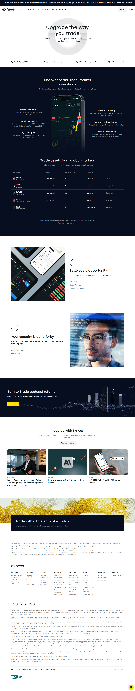

Free AI Website Creator
Exness Log In is the multi-layered authentication system that grants you access to your Exness Personal Area, web and mobile trading terminals, and MetaTrader (MT4/MT5) accounts.
Because Exness is a global financial brokerage handling real money, instant withdrawals, and live leveraged market execution, its login system is deliberately divided into two separate security tiers: one for managing your funds and profile settings, and another for connecting individual trading accounts to live market servers. Below is a comprehensive, 1,800-word breakdown of what Exness Log In is, how every login method works (including Google Single Sign-On), what happens inside your dashboard once logged in, security protocols, troubleshooting steps, and critical regulatory considerations if you are accessing the platform from India.
Part 1: Important Legal & Regulatory Notice for Users in India
Before creating an account or logging in to deposit funds from India, you must understand how Exness is classified under Indian financial law:
• RBI Alert List Status: Under the Foreign Exchange Management Act (FEMA), 1999, the Reserve Bank of India (RBI) Alert List explicitly includes Exness as an entity that is neither authorized to deal in foreign exchange nor authorized to operate an Electronic Trading Platform (ETP) in India.
• Indian Forex Rules: Resident Indians are legally permitted to trade currency derivatives only on recognized domestic exchanges (such as NSE and BSE) through SEBI-registered brokers, strictly in approved currency pairs (primarily INR-based pairs). Remitting money from Indian bank accounts, UPI, or cards to unauthorized offshore CFD platforms violates FEMA regulations and can result in frozen bank accounts or regulatory penalties.
The technical guide below explains how the Exness login system operates globally for users in jurisdictions where offshore CFD brokerage is permitted.
Part 2: Understanding the Two-Tier Exness Login Architecture
A common source of confusion for new users is discovering that Exness does not use a single universal password for everything. Instead, the login ecosystem is split into two distinct layers:
Tier 1: The Personal Area (PA) Login
Your Personal Area is your central administrative command center, accessible through any web browser at the Exness Sign-In Page or inside the official Exness Trade mobile app.
• What You Use to Log In: Your registered Email Address and your Personal Area Password—or One-Click Google Sign-In if your profile is linked to a Google account.
• What It Controls: Everything related to money and account administration. Inside the Personal Area, you complete KYC identity verification, make deposits, initiate instant withdrawals, transfer funds between accounts, change leverage limits, open new live or demo accounts, and launch the browser-based Exness Terminal.
Tier 2: The Trading Terminal (MT4/MT5) Login
Every individual live or demo trading account you open inside your Personal Area is assigned its own unique technical credentials for connecting to third-party charting platforms like MetaTrader 4 (MT4) and MetaTrader 5 (MT5).
• What You Use to Log In: You cannot use your email address or Google account to log directly into MT4 or MT5. Instead, you must enter three specific parameters:
1. Trading Account Number (Login ID): A unique 8- or 9-digit numerical ID (for example, 148920341).
2. Trading Password: A dedicated password created specifically for that individual trading account (completely separate from your Personal Area password).
3. Server Name: The exact data center hosting that account (for example, Exness-MT5Real14 for a live account or Exness-MT5Trial8 for a demo account).
(Note: If you use Exness’s proprietary web-based Exness Terminal or the Exness Trade mobile app, Tier 1 and Tier 2 are seamlessly bridged—logging into your Personal Area automatically authenticates all your linked trading accounts without requiring server names or numeric IDs.)
Part 3: Step-by-Step Guide to Every Exness Login Method
Depending on your device and how you registered, there are four primary ways to log in to Exness.
1. Logging In via Web Browser (Email & Password)
1. Verify the Official Domain: Open your browser and navigate directly to ://exness.com or click Sign In on the Exness Official Homepage. Always inspect the URL bar to ensure you are not on a lookalike phishing domain.
2. Enter Credentials: Under the Sign in tab, type your registered email address and your Personal Area password.
3. Complete Security Verification: If prompted, complete the anti-bot CAPTCHA puzzle and enter your Two-Factor Authentication (2FA) security code sent via SMS, email, or authenticator app.
4. Land in Your Personal Area: You are immediately directed to the My Accounts dashboard, displaying all your Real and Demo accounts.
2. Logging In with Your Google Account (Google SSO)
Exness supports Single Sign-On (SSO) via Google, allowing you to access your Personal Area without typing a separate password:
1. On the Exness Login Portal, click the Sign in with Google button located below the standard login form.
2. Select the Google account associated with your Exness profile from the Google pop-up window (or enter your Gmail address and Google password).
3. How Linking Works:
• New Users: If you have never registered with Exness before, clicking Sign in with Google automatically creates a new Exness Personal Area tied to that Gmail address.
• Existing Users: If you previously registered using your Gmail address and a manual password, clicking Sign in with Google automatically links to your existing Personal Area as long as the email addresses match.
4. Security Note: Even when logging in via Google, Exness still enforces your chosen 2FA security method whenever you initiate sensitive actions like withdrawing funds or changing security types.
3. Logging In via the Exness Trade Mobile App (iOS & Android)
1. Download the official Exness Trade: Online Trading app from the Apple App Store or Google Play Store (verify the developer is listed as Exness).
2. Open the app and tap Sign In.
3. Log in using either your Email + Personal Area Password or tap Continue with Google.
4. Set Up Biometric Passcode: During your first mobile login, the app prompts you to create a 6-digit PIN and enable Face ID / Fingerprint authentication. On subsequent visits, you can unlock your trading workspace in under one second using biometrics without re-entering your full credentials.
4. Logging In to MetaTrader 4 or MetaTrader 5 (Desktop & Mobile)
If you prefer executing trades on desktop or mobile MT4/MT5 software, follow these exact steps:
1. Locate Your Credentials: Log in to your Exness Personal Area first, click the gear icon (Settings) next to the trading account you wish to use, and select Account Information. Copy your MT4/MT5 Login ID and note the exact Server name. (If you forgot your Trading Password, click Change Trading Password right from that same menu.)
2. Open MetaTrader:
• On Windows/Mac Desktop: Launch MT4 or MT5, click File in the top-left menu, and choose Login to Trade Account.
• On Android/iOS MT4/MT5 App: Open the app, go to Settings > New Account > Login to an Existing Account, type Exness in the broker search bar, and tap the matching server name.
3. Authenticate: Paste your numeric Login ID, type your Trading Password, ensure the exact Server is selected from the dropdown list, and click OK / Sign In.
4. Confirm Live Connection: Look at the connection status bar in the bottom-right corner of desktop MT4/MT5 (or the Quotes tab on mobile). Once live prices begin ticking and data transfer speeds appear in kilobytes (e.g., 124/4 kb), your login is active.
Part 4: What Happens Inside Your Account After Logging In?
Once authenticated, your Exness Personal Area acts as an all-in-one operational workspace divided into core functional tabs:
• My Accounts: View every live and demo account you own (Standard, Standard Cent, Pro, Raw Spread, or Zero), check real-time equity and free margin, adjust leverage settings, or click Trade to launch the browser-based Exness Terminal powered by TradingView charts.
• Deposit & Withdrawal Hub: Initiate commission-free deposits and automated instant withdrawals. Because Exness relies on automated payment routing, funds withdrawn to verified e-wallets or crypto wallets often process within seconds of passing your 2FA confirmation.
• Transaction History: Audit every deposit, withdrawal, internal transfer between accounts, and bonus adjustment with exact timestamps and payment gateway statuses.
• Analytics & Market Research: Access integrated Trading Central technical signals, daily market news feeds, and the real-time Economic Calendar to track major central bank announcements.
• Social Trading & Partnership Portals: Switch seamlessly to manage copy-trading investments or track referral commissions if you operate as an Introducing Broker (IB).
Part 5: Security Protocols Protecting Your Exness Login
Because instant withdrawals make financial accounts prime targets for unauthorized access, Exness enforces strict security layers around your login:
1. Two-Factor Authentication (2FA) Security Types: Inside Settings > Security Settings, you assign a primary Security Type—either SMS verification, Email verification, or a TOTP Authenticator App (such as Google Authenticator). Exness requires a fresh 6-digit verification code from your chosen security method before approving any withdrawal or password change.
2. Investor Password (Read-Only Access): Alongside your main Trading Password, every MT4/MT5 account supports a separate Investor Password. If you want a mentor, auditor, or prospective copy-trading investor to view your live charts and trade history, you can share the Investor Password—it allows full viewing access while completely blocking the ability to open, modify, or close trades.
3. Automatic Session Timeouts & IP Monitoring: If your browser sits idle or if a login attempt originates from an unrecognized device or unusual geographic location, Exness automatically terminates inactive sessions and sends an immediate security alert to your registered email.
Part 6: Troubleshooting Common Exness Login Problems
Even experienced traders occasionally encounter login errors. Below is a quick diagnostic guide to resolving the most frequent access issues:
Error / Problem Root Cause Exact Solution
"Authorization Failed" or "Invalid Account" in MT4/MT5 Entering your email address instead of your numeric ID, typing your Personal Area password instead of your Trading Password, or picking the wrong server (e.g., Real12 instead of Real14). Log into your Personal Area, open Account Information to verify the exact server name, and reset your Trading Password if unsure.
"Common Error" or "No Connection" in MetaTrader Outdated desktop terminal build, local firewall block, or temporary server routing lag. Click the connection icon in the bottom-right corner of MT4/MT5 and click Rescan Servers, or restart the application.
Forgotten Personal Area Password Lost credentials for web or mobile app login. Click I forgot my password on the Exness Login Page, enter your registered email, and verify via your 2FA code to set a new password.
Google Sign-In Opens a Brand-New Empty Account You clicked Sign in with Google using a secondary Gmail address rather than the email you originally registered with. Log out, click Sign in with Google again, and select the exact Gmail address tied to your verified Exness profile.
2FA SMS Code Not Arriving Mobile carrier delays or network roaming blocks on automated international SMS messages. Wait 60 seconds and click Resend Code, or switch your Security Type to an Authenticator App inside your security settings for offline 6-digit codes.
Essential Security Best Practices
• Bookmark the Official Portal: Never click sponsored search ads or random links on Telegram/WhatsApp claiming to be "Exness VIP Login"—always use your own saved bookmark for ://exness.com.
• Never Share 2FA Codes: Exness customer support will never ask for your Personal Area password, Trading Password, or 6-digit 2FA confirmation code.
• Use an Authenticator App Over SMS: App-based 2FA codes work without cellular reception and protect your account against SIM-swap attacks.
Free AI Website Creator